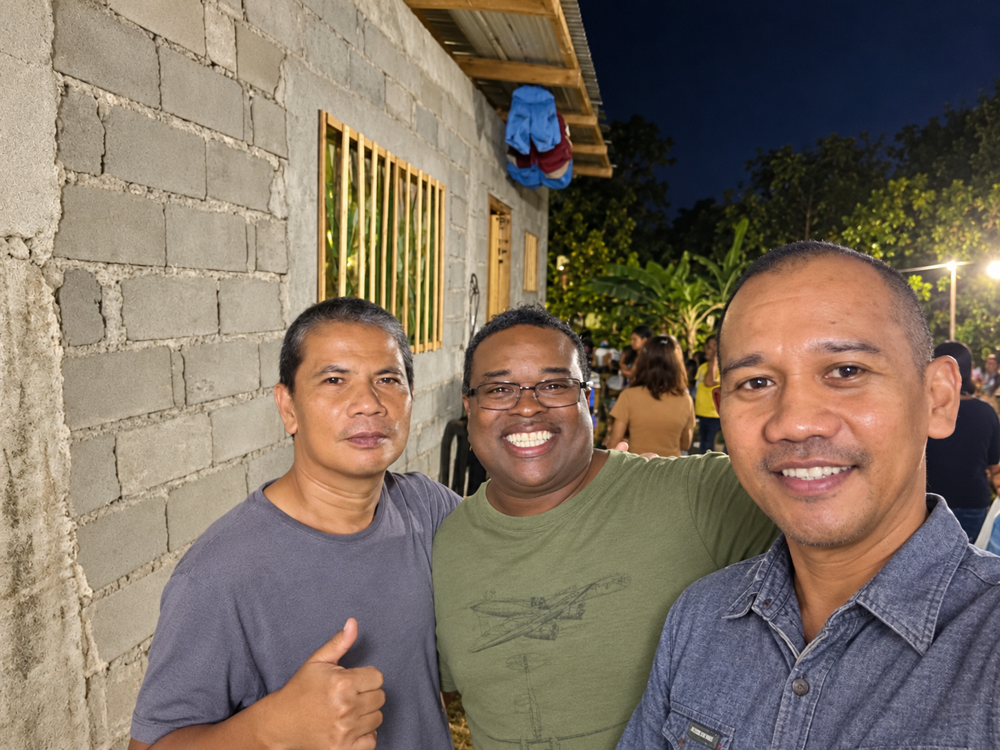
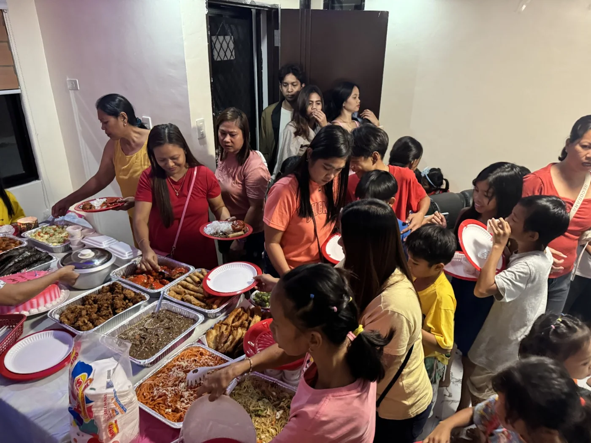

Belonging
Relationships grow when neighbors and ministry partners have space to connect, listen, and be heard.
At Kingdom Missions International, fellowship goes beyond gathering in one place. It means encouraging one another, sharing life together, and building lasting relationships rooted in faith and service.

Whether people meet for conversation, faith-centered learning, or shared time together, fellowship creates space for compassion, friendship, and mutual support.
Relationships grow when neighbors and ministry partners have space to connect, listen, and be heard.
Prayer, encouragement, and learning together help strengthen a Christ-centered community.
Fellowship nurtures connections that continue through volunteer service, outreach, and care for others.
A few moments that reflect the relationships behind KMI's mission.


Fellowship builds relationships. KMI's outreach carries that care into practical service, food relief, and opportunities to help others.
